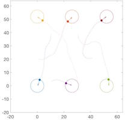
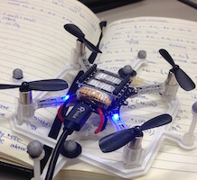
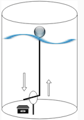
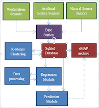

|
Research
I am currently interested in computer vision and artificial intelligence. In the past, my research interests were in control theory, ICTD, and energy systems.
|
|

|
A Hybrid Framework for Multi-Vehicle Collision Avoidance
Aparna Dhinakaran*, Mo Chen*, Glen Chou, Jennifer Shih, Claire Tomlin
56th IEEE Conference on Decision and Control, Dec 2017
Hamilton-Jacobi (HJ) reachability has successfully provided safety guarantees to small-scale systems and is flexible in terms of system dynamics. However, it becomes exponentially intractable when the number of vehicles is greater than two. We proposed a collision avoidance algorithm using a hybrid framework for N + 1 vehicles through higher-level control logic given any N-vehicle collision avoidance algorithm.
(* Equal contribution)
|
|

|
UAV Traffic Management
Frank Jiang, Aparna Dhinakaran, Mo Chen, Claire Tomlin
Unmanned aerial vehicles (UAVs) are becoming immensely popular. As more projects like Amazon Prime Air and Google Project Wing begin to use UAVs for civilian services, Unmanned aerial systems Traffic Management (UTM) is needed to manage potentially thousands of flying vehicles to guarantee liveness and safety requirements. Using Hamilton-Jacobi (HJ) reachability analysis, airspace structure, and higher-level logic, safety and liveness for large numbers of vehicles can be guaranteed. One such approach is through platooning. We worked on the hardware implementation using Crazyflie 2.0 as a proof of concept.
|
|

|
Information Technologies for Agriculture
Aparna Dhinakaran, Tsion Behailu, Tapan Parikh
Funded by CREU (funded by NSF and CRA-W)
We worked with Berkeley Represent Lab to design and develop ICTs to increase smallholder farmers access to markets and knowledge. We worked on building a smart rainfall sensor and the accompanying software to increase agricultural small-holder productivity, profitability, and sustainability. Our aim was to predict the most lucrative crops based on water sensors and weather data. This research project was eye-opening to interdiscplinary research. We collaborated with a Kenyan farmer collective, and built a prototype.
|
|

|
Sensor-based predictive modeling for smart lighting in grid-integrated buildings
Chandrayee Basu, Julien J. Caubel, Kyunam Kim, Elizabeth Cheng, Aparna Dhinakaran, Alice M. Agogino, Rodney A. Martin
Additional Links: SPIE Paper, Poster Session
The Berkeley Energy and Sustainable Technologies Laboratory (BEST Lab) has demonstrated that retrofitting zonal lighting control systems with wirelessly actuated, user-controlled, individually dimmable luminaires in offices can save 50% of the office's electricity usage. User-centric model-predictive lighting retrofit system is an innovative approach to address the current deficiencies in intelligent lighting retrofits and also adds novel capabilities to the retrofitted system. Our primary contribution is in the development of a new framework/method for retrofitting that includes a combination of new hardware and software components. I worked on the software implementation of this project, which included the database infrastructure, regression models, and K-Means clustering, and installation software.
For more information, visit here.
|
|
{kind=link}